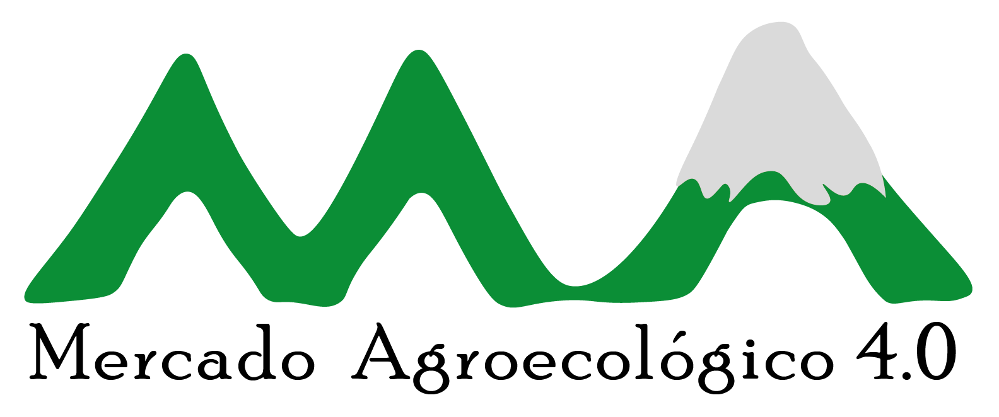

Organizaciones aliadas:



Es una estrategia de comercialización de productos con prácticas agroecológicas cosechados y transformados localmente en los municipios de Popayán, Timbío y Cajibío. Este canal te permitirá la adquisición directa de productos frescos, transformados, artesanales y para el cuidado personal, sin intermediaciones, a precios justos y fortaleciendo el tejido social agroalimentario.
Organizaciones aliadas: